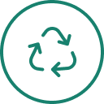
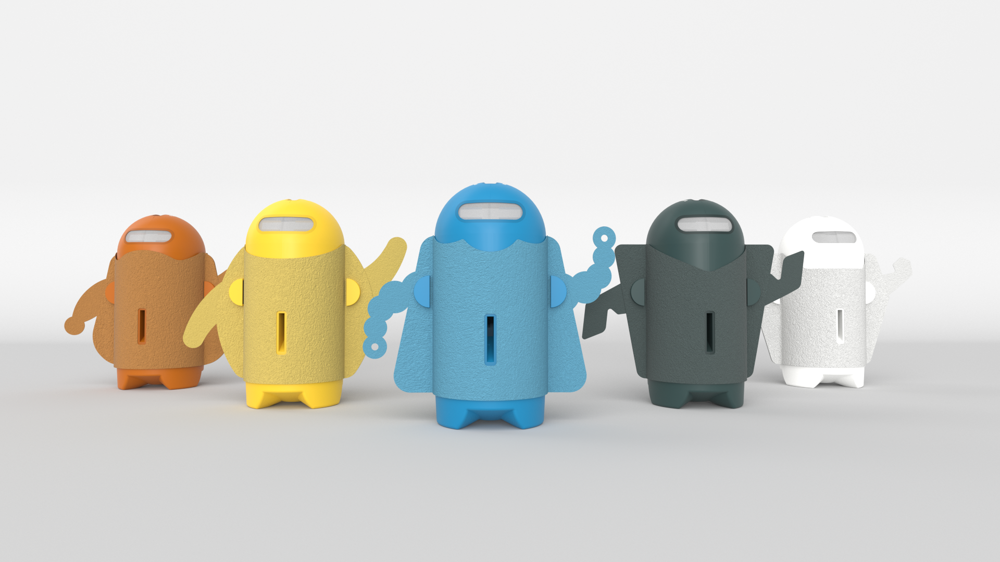

¿Qué es?
El kit Re-bot consiste en 5 robotitos cuyo objetivo es concientizar a los niños sobre el reciclaje, los distintos tipos de materiales presentes en los desechos y cómo clasificarlos. Amigables, divertidos y dinámicos, los 5 Re-bots funcionan como un excelente soporte para las maestras que decidan enseñar sobre reciclaje, generando una actividad dinámica y divertida a través de la cual pueden poner en práctica lo que aprendieron.

Hecho con papel y
plástico reciclado
Con semillas dentro del papel
para plantar luego de usar
